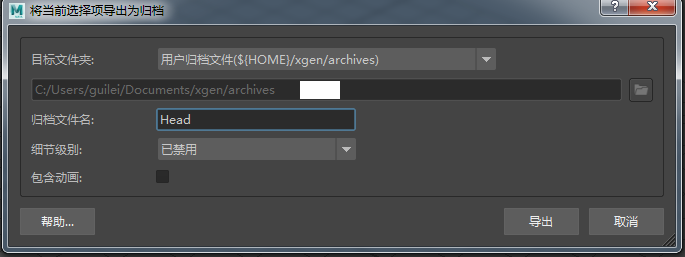

XGen 工作流
以下步骤介绍将头部模型渲染为 XGen 归档的过程。
- 打开头部场景文件。您需要为其指定一个 standard_surface 着色器，并将相关纹理贴图连接到它。
导出 XGen 归档
在将网格导出为归档之前，您必须先保存场景，否则 XGen 无法将其导出。
选择头部网格，然后转到“生成 > 将当前选择项导出为归档...”(Generate > Export Selection as Archive(s)...)（或者，在创建描述后，使用“归档文件”(Archive Files)下的“从当前选择创建...”(Create from Selection...)，将保存的场景转化为归档。）

此时应显示“将当前选择项导出为归档”(Export Selection as Archive(s))窗口。将“归档文件名”(Archive Name)更改为 Head。
选择您希望 XGen 用于保存归档文件的文件夹，并选择“导出”(Export)。然后，XGen 会在选定文件夹中将模型导出为归档文件。

将几何体导出为归档时，请确保名称中不含冒号。例如，名为 Head:Group3919Shape 的网格无法使用 XGen 正确导出为归档。删除冒号可解决该问题。
当 XGen 导出网格时，应显示“将当前选择项导出为归档进度”(Export Selection as Archive(s) Progress)窗口：
下一阶段是创建新场景，我们可以使用该场景将头部模型渲染为 XGen 归档。
创建一个多边形平面。我们会将 XGen 描述添加到该平面，它也会折叠成地板平面。选择该多边形平面，然后选择“XGen > 创建描述”(XGen > Create Description)。此时应显示 XGen 窗口。单击“创建新描述...”(Create New Description...)
如果归档未正确导出，请检查是否在导出之前加载了 MtoA 渲染设置。
创建 XGen 描述
将显示“创建 XGen 描述”(Create XGen Despcription)窗口。将“新的描述名称”(New Description Name)更改为 Heads。
选择“自定义几何体/归档文件(用于已创建的任何模型)”(Custom Geometry/Archives (use for any model you have created))，如下图所示：
预览视口显示
- XGen 窗口应替换属性编辑器。打开归档文件之前，请在以下位置中将“百分比”(Percent)值降为一个较低的值：“预览设置”(Preview Settings)（“预览/输出”(Preview/Output)选项卡）。这是一个好习惯，因为 XGen 可以根据“密度”(Density)等设置，自动在视口中创建许多实例。如果百分比太高，可能会导致 Maya 在毫无预警的情况下发生崩溃。
降低预览/输出百分比
- 返回到“基本体”(Primitives)选项卡。向下滚动到“归档文件”(Archive Files)并选择“添加”(Add)。
转到保存 XGen 归档文件的位置并选择它。其名称应类似于 Head-model.xarc
系统将显示以下提示窗口。选择“是”(Yes)，将导入随归档文件一起保存的材质（稍后，您可以根据需要更改材质指定）。
将头部材质导入场景
基本体放置
密度(Density)
增大“密度”(Density)会增加基本体的数量。
左(Left)：50。右(Right)：90。
大小
- 要在视口中查看 XGen 归档模型，请在以下位置中慢慢增加“百分比”(Percent)值：“预览设置”(Preview Settings)。如果您无法看到头部模型，可能需要调整“大小”(Size)值（在“归档文件”(Archive Files)中的“添加...”(Add...)按钮下）。
生成基本体(Generate Primitives)
- XGen 已随机横跨曲面放置头部，因为这是创建描述时的默认选项。如果您希望基本体按行和列放置，可以通过如下方式执行此操作：在“生成器属性”(Generator Attributes)（“基本体”(Primitives)选项卡）下的“生成基本体”(Generate Primitives)菜单中，选择“以统一的行和列”(In uniform rows and columns)。
以统一的行和列放置头部（右侧）。随机横跨曲面放置头部（右侧）。
“间距”(Spacing)
- “生成基本体”(Generate Primitives)设置为“以统一的行和列”(In uniform rows and columns)时，“间距”(Spacing)属性将替换“密度”(Density)。增大“间距”(Spacing)属性会增加基本体之间的距离。
0.1（左侧）。0.15（右侧）。
日志文件
- 如果保存日志文件，我们可以查看场景中唯一对象和多边形的总数（将最大警告数(Max.Warnings)增加至 6）。例如，如果我们观察以下渲染日志文件，可以看到其中包含 378001 个头部对象，总共有 71725596842 个可见三角形。
00:01:46 1552MB | -----------------------------------------------------------------------------------------
00:01:46 1552MB | geometric elements: ( min) ( avg.) ( max)
00:01:46 1552MB | objects (top level) 4 ( 4) ( 4.0) ( 4)
00:01:46 1552MB | objects (procs) **378001** ( 0) ( 1.4) ( 266256)
00:01:46 1552MB | polygons 320953 ( 1) ( 80238.3) ( 320940)
00:01:46 1552MB | -----------------------------------------------------------------------------------------
00:01:46 1552MB | triangle tessellation: ( min) ( avg.) ( max) (/ element) (% total)
00:01:46 1552MB | polymeshes 641882 ( 2) ( 320941.0) ( 641880) ( 2.00) (100.00%)
00:01:46 1552MB | unique triangles: 641882
00:01:46 1552MB | visible triangles: **71725596842**
使用 XGen 渲染的 378001 个头部对象（71725596842 个可见三角形）